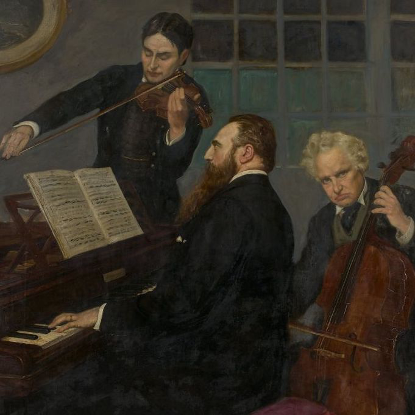
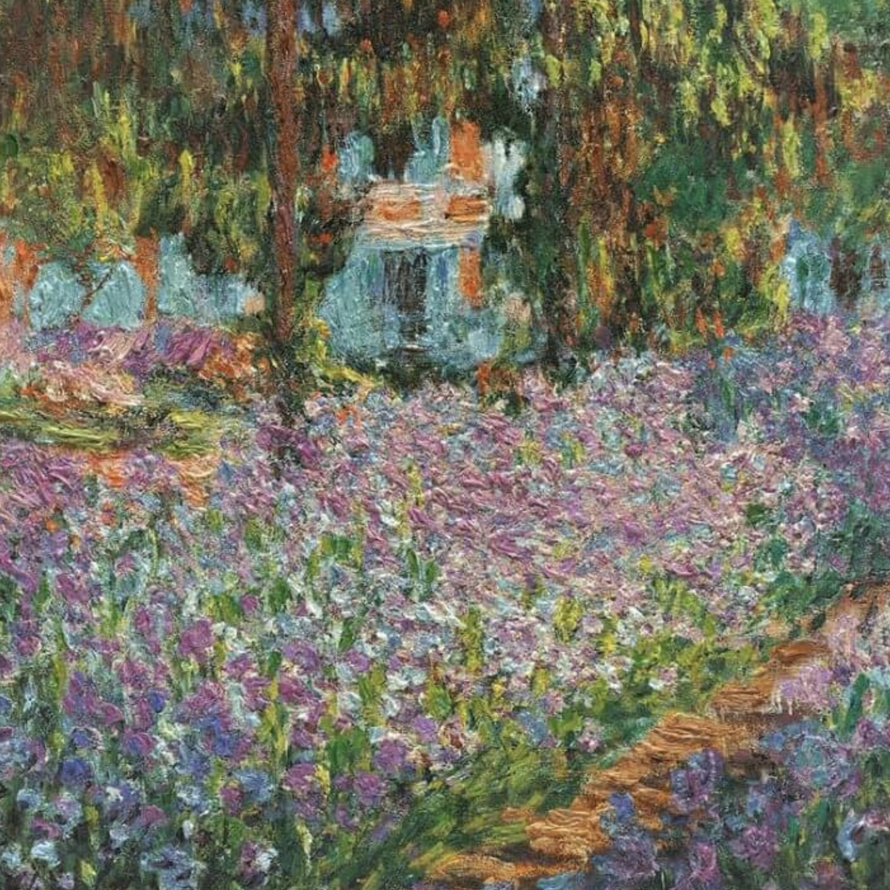

「about me!」
I'm a native of Los Angeles, California and Taipei, Taiwan!

Growing up, I played piano and viola, and my favourite pieces include Tchaikovsky’s piano trio in a minor and Brahms’ Sonata No. 2 in E-flat Major, Op. 120.

Other interests include French impressionism (like Monet’s The Artist’s Garden) and Japanese literature (like Yanagihara Hanya’s A Little Life).